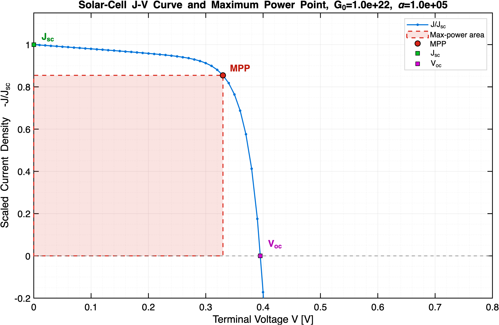

My name is Nawaraj Dahal. But if you're connected to the Department of Mathematics and
Statistics at SJSU or went to De Anza College during my time there
(Sept. 2022 - Jun. 2025), then there is a non-zero chance that you know me simply as
"Nawa".
I'm an undergraduate student in Applied and Computational Mathematics at San José State University.
My mathematical interests include nonlinear partial differential equations, numerical analysis,
scientific computing, dynamical systems, and problems where physical modeling, mathematical analysis,
and computation interact.
This is a place for research, mathematical essays, unfinished ideas,
and the questions that keep me up at night. Basically, a place to nerd out about mathematics.
Research
Analysis and Numerical Investigation of Nonlinear Semiconductor Drift–Diffusion Systems
Honors Research Thesis · San José State University · May 2026
Advisor: Dr. Daniel Brinkman
I investigated one-dimensional semiconductor p–n junction models governed by coupled nonlinear
Poisson–Boltzmann and drift–diffusion equations. I developed and analyzed finite-difference and
Scharfetter–Gummel discretizations, studied convergence through contraction arguments and spectral
properties of the discrete Laplacian, and showed that the quasi-linearized Poisson–Boltzmann iteration
is mathematically equivalent to Newton’s method for the discrete system. I then implemented a
quasi-linearized Gummel solver for equilibrium and applied-bias conditions, obtaining current-conserving
numerical solutions and J–V characteristics consistent with the expected behavior of a silicon diode
and the classical Shockley model.
Photovoltaic Extension of a Drift–Diffusion–Poisson Solver
Independent post-thesis extension · Summer 2026
Building on the numerical framework developed in my honors thesis, I extended my
one-dimensional steady-state drift–diffusion–Poisson solver from dark PN-junction transport to
illuminated solar-cell simulation. Optical generation was modeled using the Beer–Lambert law,
G(x) = G0e−αx,
and incorporated into the electron and hole continuity equations through the net source term
U = R − G, where R is Shockley–Read–Hall recombination.
At each terminal voltage, I coupled a quasi-linearized Poisson solve with Scharfetter–Gummel
discretizations of the carrier-continuity equations inside a Gummel iteration. A terminal-voltage
sweep then produced the illuminated J–V characteristic and allowed me to compute
the short-circuit current density, open-circuit voltage, maximum-power point, and fill factor.
Among the computational results produced by this extension, the illuminated J–V
curve below is my favorite.

Scaled illuminated J–V characteristic of the simulated PN junction.
The marked points show the short-circuit current density Jsc,
open-circuit voltage Voc and maximum-power point.
Pmax = VmJm.
A Matrix-Based Perspective on Multi-Level Richardson Extrapolation
Single-author paper · Accepted for publication in SIAM Undergraduate Research Online (SIURO)
Project advisor: Dr. Mohammad Saleem
I studied multi-level Richardson extrapolation for numerical integration from a linear-algebraic
perspective. I formulated the extrapolation weights through a Vandermonde-type system and interpreted
them as Lagrange interpolation weights evaluated at the origin. The analysis examines how
truncation-error cancellation competes with matrix conditioning, extrapolation-weight growth,
computational cost, and floating-point roundoff. MATLAB experiments with smooth, nonsmooth, and highly
oscillatory integrands demonstrate a problem-dependent stability window in which additional
extrapolation first improves accuracy and eventually becomes ineffective or unstable.